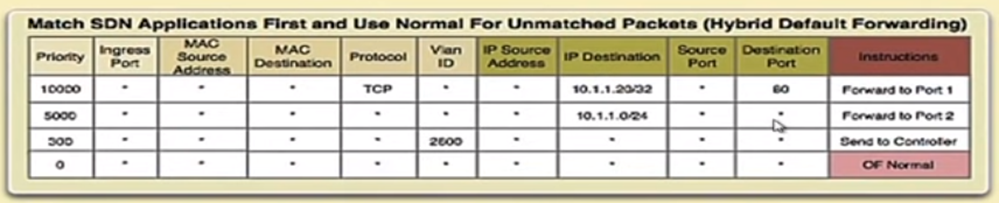

1)In Python socket programming, while defining a socket, SOCK_STREAM refers to a type of-
2)If you want to change the label of the Y-axis while plotting a graph using matplotlib in Python, what among the following functions do you use? Suppose you have imported matplotlib as plt-
3)In Socket programming, the parameter AF_INET stands for ___________.
4)Suppose a Python server is receiving data from a socket as follows,
data, addr = sock.recvfrom(1024)
What kind of socket ‘sock’ is being considered here.
5)What is the use of the Mobi-Flow protocol?
6)During remote server access using socket programming what is the utility of the
.socket_name.listen()function?
7)Which among the following is the correct direction for PACKET_OUT type messages in SDN?
8)Which among the following is a limitation of the traditional non-SDN networks?
9)During remote server access by a Raspberry Pi, where the Raspberry Pi acts as a client, the client needs the following?
10)With respect to the concept of soft time-out and hard time-out in SDN switches, which of the following relations hold?
11)Which of the following is true?
12)Consider the following figure below. To which issue of SDN does this particular figure can be related to?
13)With respect to the directional APIs in SDN, what is the functionality of East-Westbound APIs?
dht.begin(); is used to initialize the DHT sensor.14)Hierarchical SDN architecture is also known as __________ architecture.
dht.readHumidity(); is used to get the humidity value from the DHT sensor.float humidity = dht.readHumidity();dht.readTemp(); or dht.getTemperature(); do not exist in the DHT library.
15)Integrating SDN with IoT is not recommended and is not a suitable approach to follow
Servo.write(angle); is used to set the servo motor to a specific angle.myServo.write(90); → Moves the servo to 90 degrees.ServoDemo.move(); and ServoDemo.setAngle(); are incorrect as they do not exist in the standard Arduino Servo library.